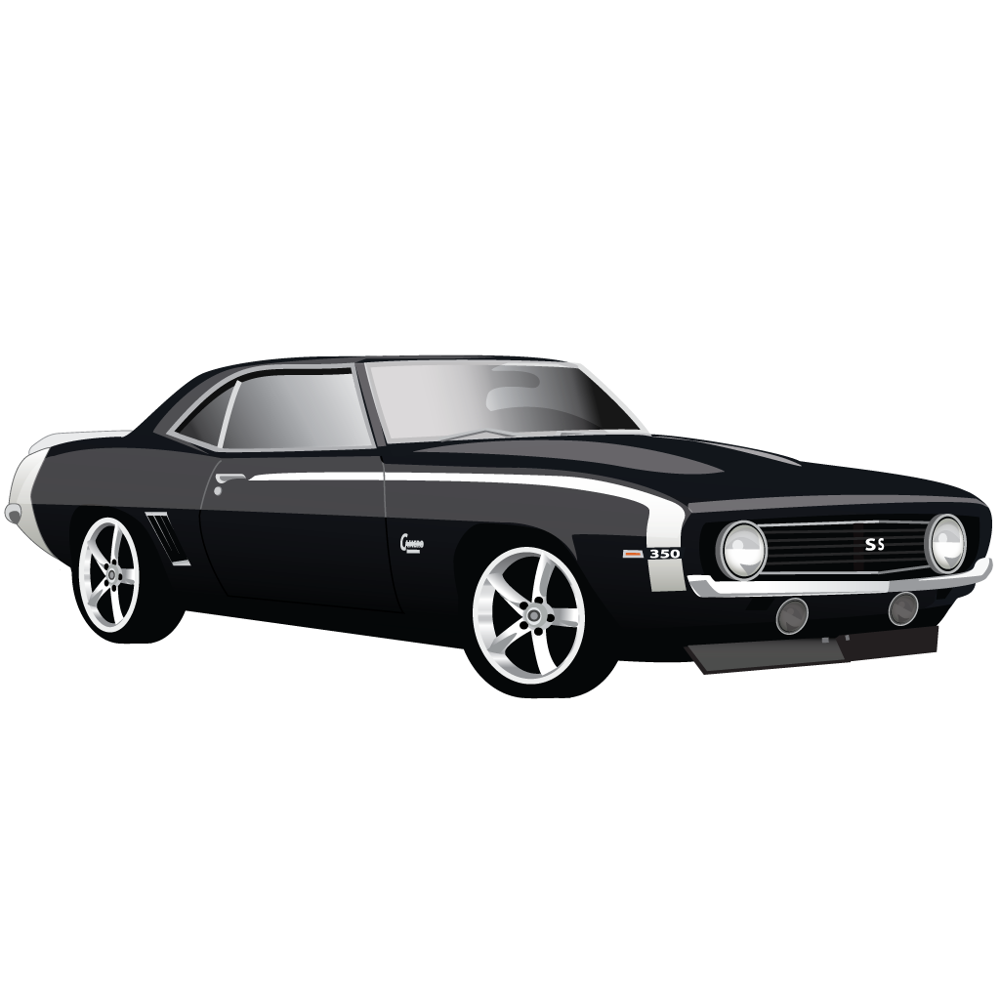

Zanim wypożyczysz.
1. Wypożyczenie samochodu następuje na podstawie zawartej umowy najmu.
2. Aby wynająć pojazd kierowca musi mieć minimum 21, a maksimum 70 lat. W przypadku, gdy wiek kierowcy wynosi od 21 do 25 lat, obowiązują dodatkowe wymagania, dotyczące długości posiadania prawa jazdy:
– w przypadku wieku do 21 lat – minimum 2 lata
– w przypadku wieku od 21 do 25 lat – minimum 1 rok
3. Przed zawarciem umowy najmu pracownik wypożyczalni ustala tożsamość oraz adres zamieszkania najemcy na podstawie co najmniej dwóch dokumentów z fotografią (tj. dowód osobisty, prawo jazdy, paszport) porównując osobę z fotografiami oraz porównując podpisy najemcy na tych dokumentach. Podpis należy sprawdzić również po podpisaniu umowy najmu (jeżeli najemca posiada, to także z podpisem na karcie kredytowej). Najemca powinien przedłożyć do wglądu ostatni raport ZUS RMUiA, lub zaświadczenie o zatrudnieniu, ewentualnie dokumenty twierdzające prowadzenie działalności gospodarczej.
4. Po sporządzeniu umowy, strony sporządzają protokół przekazania pojazdu stanowiący integralną część umowy.
5. Wynajmujący ustala i pobiera kaucję, w poczet ewentualnie powstałych szkód na pojeździe. Kaucja rozliczana jest przy zwrocie pojazdu (po wycenie ewentualnych szkód).
6. Najemca oświadcza że: przyjmuje na siebie całkowitą odpowiedzialność przez wynajmującym z tytułu przestrzegania i wypełnienia wszystkich postanowień zawartych w ogólnych warunkach najmu; że nie został skazany za przestępstwa lub wykroczenia drogowe i posiada ważne dokumenty tożsamości w tym prawo jazdy.
7. Informacje osobom trzecim i na telefon na temat Najemcy nie są udzielane.
8. Szczegółowe warunki najmu są zawarte w OGÓLNYCH WARUNKACH UMOWY NAJMU oraz w UMOWIE NAJMU.
MATI-Motors zastrzega sobie prawo do zmian swojej oferty i regulaminu w dowolnym czasie.
Obowiązuje od 03-07-2001.

Wypożyczalnia samochodów MATI-Motors Wrocław